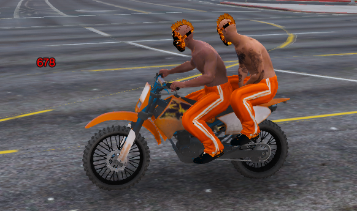

One40Towers nació como un pequeño grupo dentro de los Naranjas, pero con el tiempo se convirtió en una auténtica referencia dentro de la comunidad. Nuestra esencia siempre ha sido la misma: trabajo en equipo, creatividad y un toque de locura que nos hace destacar allí donde vamos. Somos una banda unida no solo por el rol, sino por la historia que construimos juntos.
En cada misión dejamos claro que los Naranjas no solo tienen presencia, sino identidad. Defendemos nuestros colores con orgullo y una actitud que mezcla estrategia, estilo y carácter. Donde otros ven conflicto, nosotros vemos una oportunidad para demostrar lo que realmente somos: una banda capaz de mantener la calma incluso en el caos.One40Towers se ha ganado un lugar entre los grupos más sólidos gracias a su lealtad interna. Cada miembro importa, cada voz cuenta y cada acción deja huella. No importa cuán grande sea el desafío, siempre avanzamos con la seguridad de que nadie queda atrás. Esa es nuestra verdadera fuerza.
Y aunque somos Naranjas, brillamos con luz propia. Hemos construido una reputación que combina respeto, astucia y un toque descarado que nos caracteriza. One40Towers no es solo una banda: es una familia que sigue creciendo, evolucionando y dejando marca en cada historia que atraviesa.
